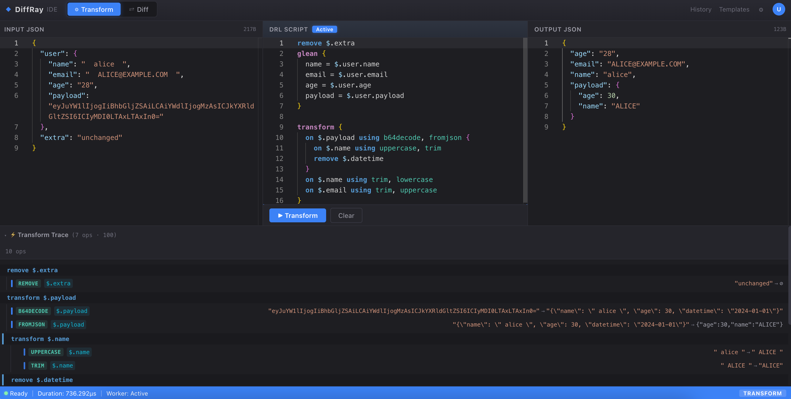
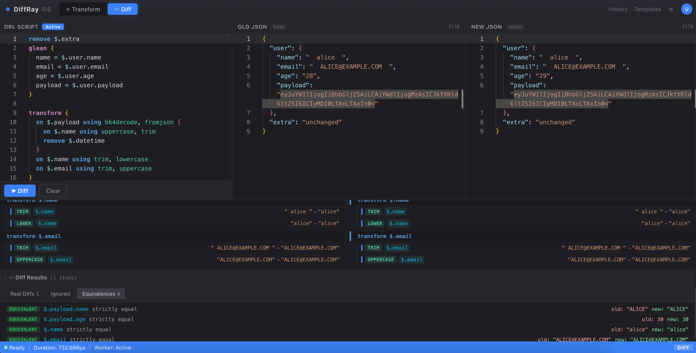

DiffRay v2 告别 YAML/JSON 配置的臃肿，引入专属领域脚本语言 DRL（DiffRay Script Language）。写几行声明式脚本，定义排除、提取、转换的完整流水线——比配置更简洁，比代码更轻量。
# DRL — DiffRay Script Language
remove $.extra
glean {
name = $.user.name
email = $.user.email
age = $.user.age
payload = $.user.payload
}
transform {
on $.payload using b64decode, fromjson {
on $.name using uppercase, trim
remove $.datetime
}
on $.name using trim, lowercase
on $.email using trim, uppercase
}v1 用 YAML/JSON 描述规则，v2 用 DRL 脚本表达意图。同样的规则，配置要写 30 行，脚本只需 15 行。
# 字段级比较规则
comparators:
- path: $.user.name
type: lua
config:
script: |
function compare(old, new, ctx)
return {
matched = string.lower(old)
== string.lower(new)
}
end
# 比较前预处理
transform:
rules:
- type: exclude
config:
path: [$.extra, $.debug]
- type: parseJsonString
config: { path: $.payload }remove $.extra
glean {
name = $.user.name
email = $.user.email
age = $.user.age
}
transform {
on $.payload using b64decode, fromjson {
on $.name using uppercase, trim
}
on $.email using trim, uppercase
}DRL 的设计哲学：让"排除什么、提取什么、怎么转换"变成可读的声明式语句，而不是嵌套的键值对。
// 1. 排除：从比较中移除指定路径
remove $.extra
remove $.metadata.created
// 2. 提取：从源 JSON 中重新构建输出结构
glean {
name = $.user.name
email = $.user.email
age = $.user.age
payload = $.user.payload
}
// 3. 转换：对匹配路径执行处理管道
transform {
// 对 $.payload 先 base64 解码再解析 JSON，
// 然后在解码后的结构上继续操作
on $.payload using b64decode, fromjson {
on $.name using uppercase, trim
remove $.datetime
}
// 顶层字段直接转换
on $.name using trim, lowercase
on $.email using trim, uppercase
}四个核心关键字 remove / glean / transform / on，搭配 using 管道操作符，规则即代码。
transform 块内可嵌套 on 子句，在父路径处理后自动进入子节点上下文，层级关系一目了然。
using 后接多个处理器，按顺序链式执行：b64decode → fromjson → uppercase。
DRL 解析器由 Go 原生实现，无第三方语法库依赖，编译进单一二进制，启动即就绪。
JSONPath 精确绑定规则，支持 $.tags[*]、$..age 通配与递归路径。
用脚本替代 YAML/JSON 配置，声明式排除、提取、转换流水线，更简洁、更易读。
b64decode、fromjson、trim、uppercase、lowercase 等内置处理器，管道化组合。
按路径设定 Critical / Warning，差异结果自带分类，便于准入判定。
core.RegisterCmp / core.RegisterOp 注册自定义比较器与处理器，Go 原生编写。
浏览器内三栏编辑器，实时编写 DRL、对比 JSON、查看逐行变换过程与 Trace。
DRL 脚本经过解析 → 预处理 → 规则绑定 → 遍历判定 → 结构化输出，每一层职责单一。
词法分析 + AST 构建
转换管道规范化文档
路径快照加载比较器
递归树并记录差异项
差异、等价、忽略、摘要
v2 的插件系统通过 core.RegisterCmp 和 core.RegisterOp 两个入口，让你用 Go 编写类型安全的自定义比较器与处理器。
package example import "github.com/ozmyth/diffray/core" func init() { core.RegisterCmp("simplecmp", func(args map[string]any) (core.Cmp, error) { return simpleCmp{}, nil }) }
实现 Name()、Supports()、Compare() 三个方法，通过 core.RegisterCmp 注册到引擎。
Name() 返回比较器唯一标识Supports(old, new) 声明可处理的数据类型Compare(old, new) 返回 *core.CompareResultinit() 中注册，import 即生效type simpleCmp struct{}
func (c simpleCmp) Name() string {
return "simplecmp"
}
func (c simpleCmp) Compare(old, new any) *core.CompareResult {
return &core.CompareResult{}
}package example import "github.com/ozmyth/diffray/core" func init() { core.RegisterOp("simpleop", func(args map[string]any) (core.Op, error) { return simpleOp{}, nil }) }
实现 Name() 和 Apply() 方法，通过 core.RegisterOp 注册，可在 DRL 的 using 管道中直接调用。
Name() 返回处理器唯一标识Apply(value) 对输入值做变换并返回using simpleopargs map[string]any 传入type simpleOp struct{}
func (o simpleOp) Name() string {
return "simpleop"
}
func (o simpleOp) Apply(value any) (any, error) {
return value, nil
}DiffRay v2 内置 Web IDE：左侧写 DRL 脚本，中间放旧 JSON，右侧放新 JSON，一键执行即可看到差异结果、等价项、逐行变换过程与完整 Trace。

transform.pngon 子句的执行过程。
diff.pngOLD / NEW 分别记录独立的变换 Trace，可展开查看每一步处理器对数据做了什么。
DRL 语法高亮、JSON 校验、快捷键支持，开发体验对标 VS Code。
差异按 Critical / Warning 分级，等价项默认折叠，专注真正的变更。
启动 Go 服务即附带 IDE，无需额外部署前端，本地调试零成本。
在 IDE 里声明 remove / glean / transform 规则。
左边 old，右边 new，或单个输入做 transform。
IDE 即时展示转换结果与 Trace 过程。
执行对比，拿到结构化差异报告。
规则稳定后，通过 HTTP API 集成到流水线。
v2 精简为两个核心接口。Diff 负责对比，Transform 负责变换，覆盖所有 JSON 处理场景。
提交 old、new 与可选 DRL 脚本，返回差异项、等价项、忽略项与严重程度摘要。
// 请求体
{
"old": "{...}",
"new": "{...}",
"script": "remove $.extra\nglean {...}"
}
// 响应体
{
"diffs": [...],
"equivalences": [...],
"ignored": [...],
"summary": { "critical": 1, "warning": 0 },
"duration": "2.15ms"
}提交 JSON 与 DRL 脚本，返回变换后的 JSON、处理 Trace 与耗时。
// 请求体
{
"input": "{...}",
"script": "transform { on $.name using trim }"
}
// 响应体
{
"result": { "name": "alice" },
"traces": [...],
"duration": "0.82ms"
}# 拉取镜像并启动（默认 :8080，附带 DiffRay IDE）
docker run -p 8080:8080 ozmyth/diffray:v2启动后访问 http://localhost:8080 即可打开 DiffRay IDE，浏览器内编写 DRL、粘贴 JSON、实时查看对比结果。